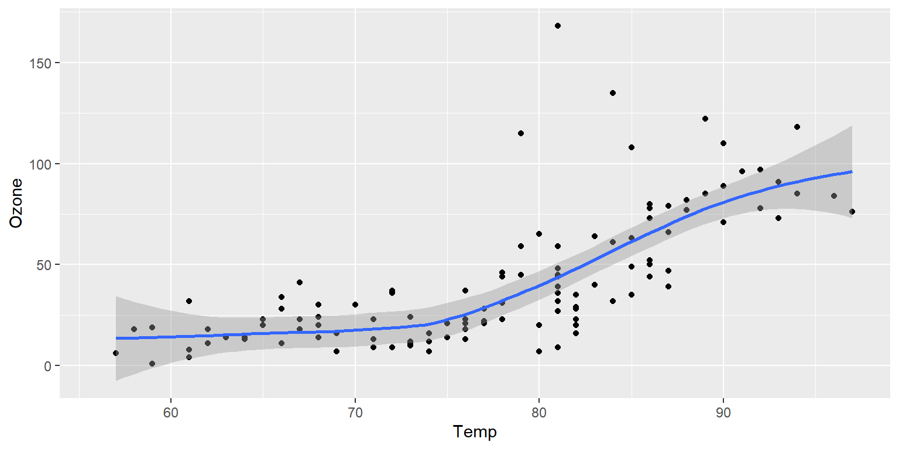
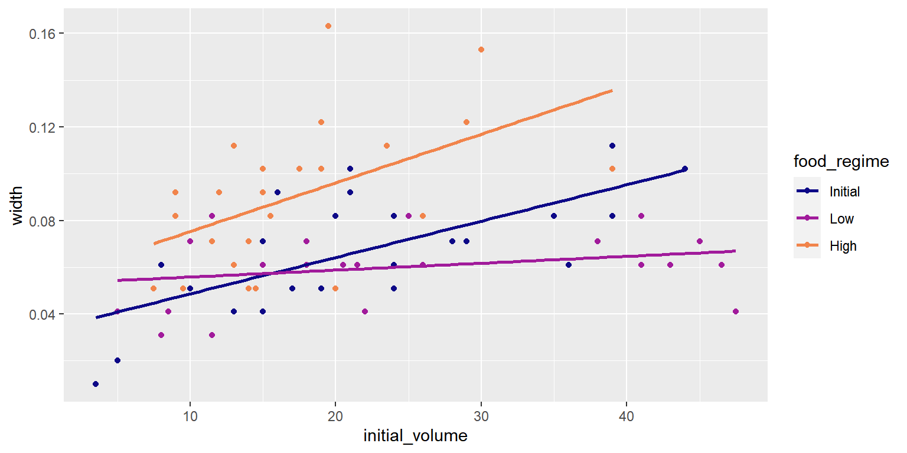

ML Framework in R
Australian Weather
Import libraries
Figure 1 further explores the impact of temperature on ozone level.
Code

This is an updated version of the original ML framework started in September of 2019.
Read in the Sea Urchin data
Code
urchins <-
# Data were assembled for a tutorial
# at https://www.flutterbys.com.au/stats/tut/tut7.5a.html
read_csv("https://tidymodels.org/start/models/urchins.csv") %>%
# Change the names to be a little more verbose
setNames(c("food_regime", "initial_volume", "width")) %>%
# Factors are very helpful for modeling, so we convert one column
mutate(food_regime = factor(food_regime, levels = c("Initial", "Low", "High")))Taking a high-level look at the data:
# A tibble: 6 × 3
food_regime initial_volume width
<fct> <dbl> <dbl>
1 Initial 3.5 0.01
2 Initial 5 0.02
3 Initial 8 0.061
4 Initial 10 0.051
5 Initial 13 0.041
6 Initial 13 0.061tibble [72 × 3] (S3: tbl_df/tbl/data.frame)
$ food_regime : Factor w/ 3 levels "Initial","Low",..: 1 1 1 1 1 1 1 1 1 1 ...
$ initial_volume: num [1:72] 3.5 5 8 10 13 13 15 15 16 17 ...
$ width : num [1:72] 0.01 0.02 0.061 0.051 0.041 0.061 0.041 0.071 0.092 0.051 ...The urchins data is a tibble. For each of the \(72\) urchins, we know their:
experimental feeding regime group (
Initial,Low, orHigh)size in millimeters at the start of the experiment (
initial_volume)suture width at the end of the experiment (
width)
Exploratory Data Analysis
Code
`geom_smooth()` using formula 'y ~ x'
We can see that urchins that were larger in volume at the start of the experiment tended to have wider structures at the end, but the slopes of the lines look different so this effect may depend on the feeding regime condition.
i.e. There’s some interaction going on that should be noted for future modelling.
Build and Fit a Model
A standard two-way analysis of variance (ANOVA) model makes sense for this dataset because we have both a continuous predictor and a categorical predictor. Since the slopes appear to be different for at least two of the feeding regimes, let's build a model that allows for two-way interactions. Specifying an R formula with our variables in this way: width ~ initial_volume * food_regime
allows our regression model depending on initial volume to have separate sloped and intercepts for each food regime.
For this kind of model, OLS is a good initial approach. With tidymodels, we start by specifying the functional form of the model that we want using the parsnip package. Since there is a numeric outcome and the model should be linear with slopes and intercepts, the model type is "linear regression". We can declare this with:
That is pretty underwhelming since, on its own, it doesn't really do much. However, now that the type of model has been specified, we can think about a method for fitting or training the model, the model engine. The engine value is often a mash-up of the software that can be used to fit or train the model as well as the estimation method. The default for linear_reg() is “lm” for ordinary least squares.
You could set a non-default option instead:
Linear Regression Model Specification (regression)
Computational engine: glm From here, you can train the model using the fit() function:
Code
parsnip model object
Call:
stats::lm(formula = width ~ initial_volume * food_regime, data = data)
Coefficients:
(Intercept) initial_volume
0.0331216 0.0015546
food_regimeLow food_regimeHigh
0.0197824 0.0214111
initial_volume:food_regimeLow initial_volume:food_regimeHigh
-0.0012594 0.0005254 Perhaps our analysis requires a description of the model parameter estimates and their statistical properties. Although the summary() function for lm objects can provide that, it gives the results back in an unwieldy format. Many models have a tidy() method that provides the summary results in a more predictable and useful format (e.g. a data frame with standard column names):
# A tibble: 6 × 5
term estimate std.error statistic p.value
<chr> <dbl> <dbl> <dbl> <dbl>
1 (Intercept) 0.0331 0.00962 3.44 0.00100
2 initial_volume 0.00155 0.000398 3.91 0.000222
3 food_regimeLow 0.0198 0.0130 1.52 0.133
4 food_regimeHigh 0.0214 0.0145 1.47 0.145
5 initial_volume:food_regimeLow -0.00126 0.000510 -2.47 0.0162
6 initial_volume:food_regimeHigh 0.000525 0.000702 0.748 0.457 Code
mars_disc_spec <-
discrim_flexible(prod_degree = tune()) %>%
set_engine("earth")
reg_disc_spec <-
discrim_regularized(frac_common_cov = tune(), frac_identity = tune()) %>%
set_engine("klaR")
dtree <-
decision_tree(cost_complexity = tune(), min_n = tune()) %>%
set_engine("rpart") %>%
set_mode("classification")Next, we’ll need a resampling method. In this case we’ll use the bootstrap.
A workflow set takes a named list of pre-processors and named list of parsnip model specifications.
Code
# A workflow set/tibble: 3 × 4
wflow_id info option result
<chr> <list> <list> <list>
1 formula_regularized <tibble [1 × 4]> <opts[0]> <list [0]>
2 formula_mars <tibble [1 × 4]> <opts[0]> <list [0]>
3 formula_dtree <tibble [1 × 4]> <opts[0]> <list [0]>Adding options to the models
We can add any specific options that we think are important for tuning or resampling using the option_add() function.
For illustration, let's use the extract argument of the control function to save the fitted workflow. We can then pick which workflow should use this option with the id argument:
Code
Warning: Don't have an 'id' value formula_cart# A workflow set/tibble: 3 × 4
wflow_id info option result
<chr> <list> <list> <list>
1 formula_regularized <tibble [1 × 4]> <opts[0]> <list [0]>
2 formula_mars <tibble [1 × 4]> <opts[0]> <list [0]>
3 formula_dtree <tibble [1 × 4]> <opts[0]> <list [0]>Tuning the models
Since these models all have tuning parameters, we can apply the workflow_map() function to execute grid search for each of these model-specific arguments. The default function to apply across the workflows is tune_grid() but other tune_*() functions and fit_resamples() can be used by passing the function name as the first argument.
Let's use the same grid size for each model. For the MARS model, there are only two possible tuning parameter values but tune_grid() is forgiving about our request of 20 parameter values.
The verbose option provides a concise listing for which workflow is being processed:
Code
i 1 of 3 tuning: formula_regularized✖ 1 of 3 tuning: formula_regularized failed with: ! parsnip could not locate an implementation for `discrim_regularized` model specifications using the `klaR` engine.ℹ The parsnip extension package discrim implements support for this specification.ℹ Please install (if needed) and load to continue.i 2 of 3 tuning: formula_mars✖ 2 of 3 tuning: formula_mars failed with: ! parsnip could not locate an implementation for `discrim_flexible` model specifications using the `earth` engine.ℹ The parsnip extension package discrim implements support for this specification.ℹ Please install (if needed) and load to continue.i 3 of 3 tuning: formula_dtreex Bootstrap01: preprocessor 1/1:
Error in `get_all_outcomes()`:
! The following outcomes were not found in `data`: 'class'.x Bootstrap02: preprocessor 1/1:
Error in `get_all_outcomes()`:
! The following outcomes were not found in `data`: 'class'.x Bootstrap03: preprocessor 1/1:
Error in `get_all_outcomes()`:
! The following outcomes were not found in `data`: 'class'.x Bootstrap04: preprocessor 1/1:
Error in `get_all_outcomes()`:
! The following outcomes were not found in `data`: 'class'.x Bootstrap05: preprocessor 1/1:
Error in `get_all_outcomes()`:
! The following outcomes were not found in `data`: 'class'.x Bootstrap06: preprocessor 1/1:
Error in `get_all_outcomes()`:
! The following outcomes were not found in `data`: 'class'.x Bootstrap07: preprocessor 1/1:
Error in `get_all_outcomes()`:
! The following outcomes were not found in `data`: 'class'.x Bootstrap08: preprocessor 1/1:
Error in `get_all_outcomes()`:
! The following outcomes were not found in `data`: 'class'.x Bootstrap09: preprocessor 1/1:
Error in `get_all_outcomes()`:
! The following outcomes were not found in `data`: 'class'.x Bootstrap10: preprocessor 1/1:
Error in `get_all_outcomes()`:
! The following outcomes were not found in `data`: 'class'.x Bootstrap11: preprocessor 1/1:
Error in `get_all_outcomes()`:
! The following outcomes were not found in `data`: 'class'.x Bootstrap12: preprocessor 1/1:
Error in `get_all_outcomes()`:
! The following outcomes were not found in `data`: 'class'.x Bootstrap13: preprocessor 1/1:
Error in `get_all_outcomes()`:
! The following outcomes were not found in `data`: 'class'.x Bootstrap14: preprocessor 1/1:
Error in `get_all_outcomes()`:
! The following outcomes were not found in `data`: 'class'.x Bootstrap15: preprocessor 1/1:
Error in `get_all_outcomes()`:
! The following outcomes were not found in `data`: 'class'.x Bootstrap16: preprocessor 1/1:
Error in `get_all_outcomes()`:
! The following outcomes were not found in `data`: 'class'.x Bootstrap17: preprocessor 1/1:
Error in `get_all_outcomes()`:
! The following outcomes were not found in `data`: 'class'.x Bootstrap18: preprocessor 1/1:
Error in `get_all_outcomes()`:
! The following outcomes were not found in `data`: 'class'.x Bootstrap19: preprocessor 1/1:
Error in `get_all_outcomes()`:
! The following outcomes were not found in `data`: 'class'.x Bootstrap20: preprocessor 1/1:
Error in `get_all_outcomes()`:
! The following outcomes were not found in `data`: 'class'.x Bootstrap21: preprocessor 1/1:
Error in `get_all_outcomes()`:
! The following outcomes were not found in `data`: 'class'.x Bootstrap22: preprocessor 1/1:
Error in `get_all_outcomes()`:
! The following outcomes were not found in `data`: 'class'.x Bootstrap23: preprocessor 1/1:
Error in `get_all_outcomes()`:
! The following outcomes were not found in `data`: 'class'.x Bootstrap24: preprocessor 1/1:
Error in `get_all_outcomes()`:
! The following outcomes were not found in `data`: 'class'.x Bootstrap25: preprocessor 1/1:
Error in `get_all_outcomes()`:
! The following outcomes were not found in `data`: 'class'.Warning: All models failed. Run `show_notes(.Last.tune.result)` for more
information.Warning: Unknown or uninitialised column: `.notes`.✖ 3 of 3 tuning: formula_dtree failed with Taking a look at our workflows: